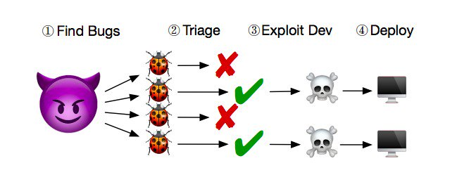

Дослідник Брендан Долан-Гевітт (Brendan Dolan-Gavitt) з Нью-Йоркського університету запропонував додавати тисячі фальшивих багів у додатки, щоб посилити їхній захист. На його думку, це ускладнить процес пошуку вразливостей, придатних для злому
Парадоксальна ідея виникла під час багаторічної роботи над алгоритмами впровадження нешкідливих помилок у вихідний код програм. Наповнення коду багами необхідне для тестування систем пошуку помилок. Тепер дослідники вважають, що фальшиві вразливості можна використовувати проти хакерів. Долан-Гевітт пояснив, що розробників експлоїтів мало, і їхні послуги коштують дорого. Якщо придумати спосіб, як витратити їхній час даремно, це скоротить кількість зламаних додатків. Також велика кількість "chaff bugs" маскує реальні критичні проломи в програмах.
Дослідник визнав, що найближчим часом незвичайний метод захисту навряд чи набуде популярності. Головна складність полягає у створенні саме нешкідливих помилок, які будуть максимально схожі на критичні. Також метод непридатний для захисту проєктів із відкритим вихідним кодом. Пошуком багів у вихідних кодах займаються не тільки хакери, а й нейромережі. У березні 2018 року Ubisoft представила ШІ для виявлення помилок під час розробки ігор.